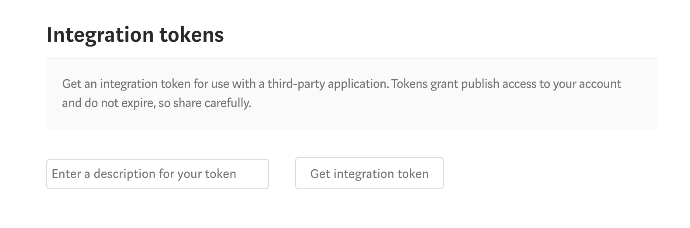

Markdownで書いたテキストをMediumへポストする(mdium)
完全な二番煎じです。
上記記事は，Go 言語で作った「Markdownで書いたテキストをMediumへポストする」CLIツールです． 弊社の技術記事置き場が Medium だったので，なんとか，ここのように Markdown で書けないかと調べていたら上記記事が出て来ました． もっといいのできないかなと車輪の再発明してみたけど，正直大して変わらなかったと思います．
作ったもの
md2mid と同様に Markdown で書いた記事を Medium に送信する CLI ツールを作った． 言わずもがな Haskell 製．
違いがあるとすれば:
- Haskell 製（しつこい）
- 環境変数を使ったトークンの管理
- Docker Image 化してる
使い方
まず CLI ツールをインストールするには，リポジトリをクローンして Haskell Stack で直接ビルド・インストールする:
$ git clone https://github.com/matsubara0507/mdium.git
$ cd mdium
$ stack install mdiumあるいは，Docker Image をプルしてくる:
$ docker pull matsubara0507/mdiumコマンドを使うには，まず Medium のトークンを設定から生成する．

これを環境変数 MEDIUM_TOKEN にセットする． 直接でも良いし，./.env か ~/.env に描いても良い． 下記のコマンドを実行することでトークンをチェックできる:
$ mdium --me
Hi MATSUBARA Nobutada!!Docker イメージを使う場合にはこう:
$ docker run --rm --env-file="$HOME/.env" matsubara0507/mdium /bin/bash -c "mdium --me"トークンを渡すのは --env-file オプションでも -e オプションでも何でも良い． 実際に送信するには引数に送信したいファイルのパスを渡すだけ:
$ medium example.md
post success, browse to: https://medium.com/@nobutada/e31f70013b36こうすることで指定した Markdown ファイルを draft として記事にしてくれる． ちなみに，これが下記のようになる．

Medium API
こっからは中身の話を少し． 中では Medium の API を使っている．
その中に記事を送信する API があるのだが，驚いたことに送信できるファイルフォーマットに HTML と Markdown があったのだ． つまり，特別な処理をせずともこの API を使ってマークダウンを送信すれば良い．
Dockerise
Haskell Stack には Docker integration というのがある（あんまりドキュメントにまとまっていない機能）． これを使うことで，指定した Docker image 内で Haskell プロジェクトをビルドしたり，ビルドした実行ファイルを突っ込んだ Docker image を作成したりできる．
今回は次のような設定を書き:
docker:
repo: fpco/stack-build
enable: false
image:
container:
name: matsubara0507/mdium
base: fpco/ubuntu-with-libgmp次のようなコマンドを実行することで Docker image を作成している:
$ stack docker pull
$ stack --docker image container作成した Image は docker push コマンドでアップロードしている． また，この一連の流れを TravisCI で自動化している．
ToDo
突貫で作ったのでいくつかやり残しがある．
- エラーハンドリング : 特に何も例外処理していないので
- 記事の更新 : 今はひたすら新しい記事を生成してしまう
- タグやファイルフォーマットなどの細かい指定
おしまい
だいたい1日とちょっとでサクッと作った割にはいい感じのものができて満足． どんどん再発明していこ．